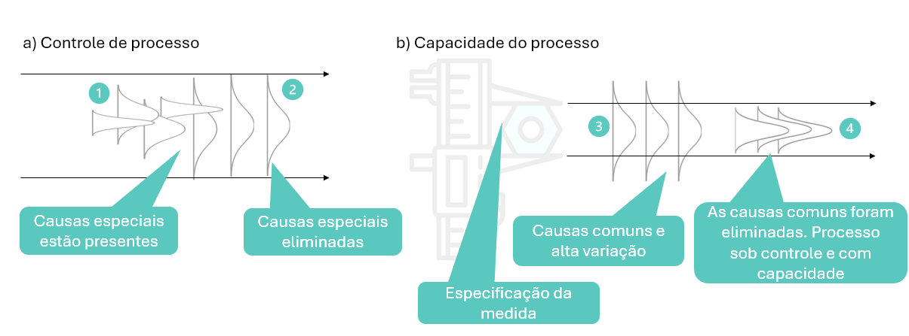
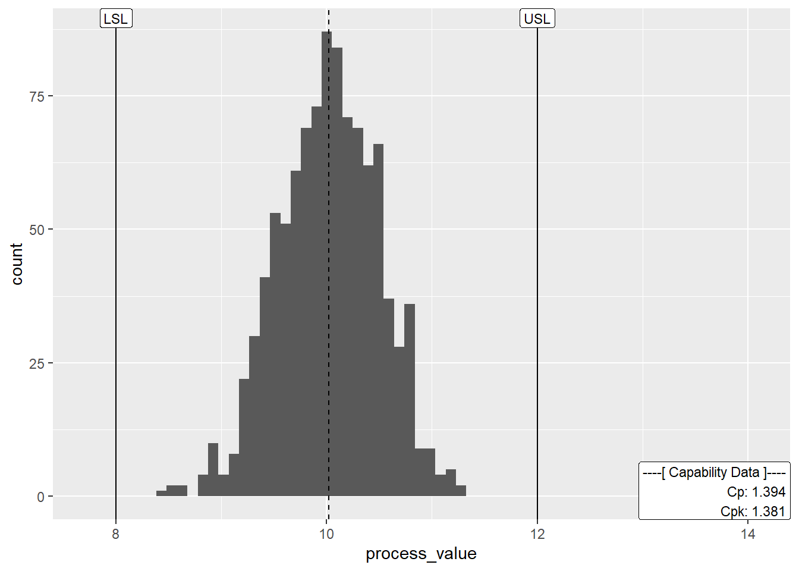

É uma ferramenta visual que permite explorar a ideia da distribuição e a organização dos dados. É um tipo diferente de gráfico de barras onde a maior frequencia de dados se concentra no meio do gráfico, é por isso que ele parece uma montanha ou um sino.
O gráfico mostra como os dados estão distribuídos em torno de uma média, agrupando os dados em faixas(classes) que mostra qantos valores caem em cada faixa.
Exemplo: Se você mede a altura de 100 pessoas, o histograma pode mostrar quantas pessoas têm entre 1.60 e 1.75, entre 1.75 a 1.85, e assim por diante.
Característias técnicas
O peso das abóboras é simétrico ou seja a maior parte delas pesa em média 10 kgs cada uma.
A distribuição de problemas cardíacos por idade, é assimétrica a esquerda ou seja, a ocorrência de casos em pessoas com 20 anos é muito baixa, a maior parte está concentrada em 67 acima.
A distribuição dos preços das casas, é assimétrica a direita ou seja, a maioria das casas da amostra, possuem preços por volta de 450 mil, mas existem algumas poucas com preços bem elevados por volta de 2 milhões cada uma.
Figura - Histogramas
Tipos de distribuição dos dados
Para um estatístico ou melhorista de processos, cada formato do histograma o qual revela a distribuição dos dados, conta uma historia sobre os dados. Abaixo alguns exemplos de distribuições.
Tipos de Histogramas
Qual o objetivo
Visualizar a distribuição dos dados Ele revela se os dados são simétricos(formato de sino), assimétricos(como uma cauda longa para um lado), concentrados, dispersos, . A forma, da pistas sobre a natureza dos dados e os processos que os geraram.
Identificar padrões multimodal(com várias picos), caudas, lacunas ou outliers(valores muito distantes do corpo principal da distribuição)
Comparar distribuições de diferentes conjuntos de dados (e.g. podemos comparar a distribuição de notas de alunos em duas turmas diferentes para avaliar se o desempenho relativo das turmas)
Apoior decisões guiando a escolha de modelos estatísticos mais adequados para cada tipo de dados em áreas como estatística, ciência de dados, economia, psicologia, medicina, engenharia ou outra área que lide com dados quantitativos.
Traduzir o caos em ordem transformando uma lista aparentemente aleatória de números em uma imagem compreensível.
De onde vem
A necessidade surgiu da análise estatística aplicada a qualidade, especialmente com o movimento da qualidade total (TQM) e o ciclo PDCA. Empresas precisavam entender como os processos se comportavam para melhorar os produtos, reduzir falhas e tomar decisões baseada em dados reais.
No exemplo da figura abaixo
Causas especiais estão agindo no processo
Elas são eliminadas, no entanto a variação está muito alta rompendo os limites da especificação.
É feito um trabalho de redução da variação eliminando causas comuns de variação.
O histograma nos mostra que o processo ficou estável e sob controle.

Exemplo do uso de histograma na visualização e ajuste de processos
Como fazer
Exemplo um histograma dos preços de casas em Ames Iowa em 2011
Podemos notar alguns detalhes na distribuição dos preços de imóveis. As linhas pontilhadas são a média de preços.
Não possui ar condicionado central - histograma vermelho: mostra que a quantidade de imóveis é pequena, a distribuição dos preços é normal com preços bem abaixo dos 200 mil dólares.
Possui ar condicionado central - histograma azul: mostra que a quantidade de imóveis é grande, a distribuição dos preços é assimétrica ou seja, muitas casas tem o preço próximoa 200 mil dólares e poucas casas tem preços acima de 600 mil.
Aqui um exemplo de histograma usado em manufatura onde especificação tem limite máximo de 12 e mínimo de 8. Podemos observar que a média de tamanho da peça é de 10 e a variação está dentro dos limites da especificação.
Code
#packageslibrary(tidyverse)library (ggQC)library(patchwork)#data - para criar os gráficos b, c e d, altere os desvios padrão.set.seed(1221)data_norm_dist <-data.frame(process_id =1:1000,sub_group =rep(1:20, each =5),process_value =rnorm(n =1000, mean =10, sd = .5))#Capability plotdata_norm_dist %>%ggplot (aes (x = process_value ))+geom_histogram(bins =30)+geom_vline(aes (xintercept =mean (process_value)),linetype ="dashed")+stat_QC_Capability(LSL =8,USL =12,show.cap.summary =c("Cp","Cpk"),cap.summary.size =3,method ="XmR")+scale_x_continuous (expand =expansion (mult =c(.15,.6)))

Pra onde vai
Depois de criado, o histograma pode ser usado:
Em reuniões de análise de desempenho.
Para identificar gargalos ou oportunidades de melhoria.
Como base para decisões estratégicas, como mudanças em logística ou atendimento.
Em relatórios gerenciais, para mostrar o comportamento de indicadores.
Qual o resultado
Clareza sobre o comportamento dos dados.
Identificação de padrões ou anomalias.
Melhoria na tomada de decisão.
Redução de variabilidade e aumento da previsibilidade.